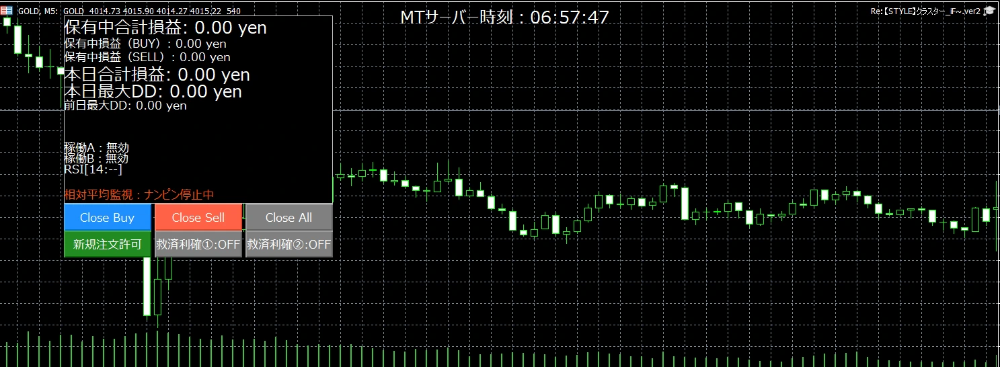

MT5 / MT4 共通 ｜ パラメーター画面の再現と、各項目の説明
👆 行を押すと、その項目の説明が開きます。値は初期値（そのまま使う時の値）です。MT4版も、名前・初期値・並びは同じです。
| 変数名 | 値 |
|---|---|
| 取引方向設定 | |
| 第１マジック 取引方向の選択（Longのみ／Shortのみ／両方向／停止） | 両方向 |
| 第２マジック 取引方向の選択（Longのみ／Shortのみ／両方向／停止） | 両方向 |
| 第３マジック 取引方向の選択（Longのみ／Shortのみ／両方向／停止） | 両方向 |
| 第４マジック 取引方向の選択（Longのみ／Shortのみ／両方向／停止） | 両方向 |
| （上の4行に共通）このマジックが取る方向を選びます。Longのみ＝買いだけ／Shortのみ＝売りだけ／両方向＝買いと売りの両方／停止＝このマジックは新しい注文を出しません。 | |
| 第１マジックパラメーター | |
| 第１ 初期ロット | 0.01 |
| 最初の1本（1段目）のロットです。 | |
| 第１ 加算ロット・基準値（加算ロットタイプは二次加算となってます） | 0.01 |
| 加算ロットタイプは二次加算です。n段目（1段目を0）のロット＝初期ロット＋基準値×n(n+1)/2。前の段から足す量が「基準値×1、×2、×3…」と増えていきます。初期ロット0.01・基準値0.01なら、0.01 → 0.02 → 0.04 → 0.07 → 0.11 → 0.16 → 0.22 … | |
| 第１ 最大段数 | 30 |
| このマジックが、買い・売りそれぞれで持てる本数の上限です。 | |
| 第１ ロット上限 | 99.0 |
| 1本あたりのロットの上限です。計算したロットがこれより大きくなる時は、この値で止めます。 | |
| （第２・第４マジック共通）パラメーター | |
| 第２/第４ 初期ロット | 0.01 |
| 最初の1本（1段目）のロットです。第２・第４マジックで共通です。 | |
| 第２/第４ 加算ロット・基準値（加算ロットタイプは二次加算となってます） | 0.01 |
| 加算ロットタイプは二次加算です。n段目（1段目を0）のロット＝初期ロット＋基準値×n(n+1)/2。前の段から足す量が「基準値×1、×2、×3…」と増えていきます。初期ロット0.01・基準値0.01なら、0.01 → 0.02 → 0.04 → 0.07 → 0.11 → 0.16 → 0.22 …（第２・第４マジックで共通） | |
| 第２/第４ 最大段数 | 30 |
| このマジックが、買い・売りそれぞれで持てる本数の上限です。第２・第４マジックで共通です。 | |
| 第２/第４ ロット上限 | 99.0 |
| 1本あたりのロットの上限です。第２・第４マジックで共通です。 | |
| 第３マジックパラメーター | |
| 第３ 初期ロット | 0.01 |
| 最初の1本（1段目）のロットです。 | |
| 第３ 加算ロット・基準値（加算ロットタイプは二次加算となってます） | 0.01 |
| 加算ロットタイプは二次加算です。n段目（1段目を0）のロット＝初期ロット＋基準値×n(n+1)/2。前の段から足す量が「基準値×1、×2、×3…」と増えていきます。初期ロット0.01・基準値0.01なら、0.01 → 0.02 → 0.04 → 0.07 → 0.11 → 0.16 → 0.22 … | |
| 第３ 最大段数 | 30 |
| このマジックが、買い・売りそれぞれで持てる本数の上限です。 | |
| 第３ ロット上限 | 99.0 |
| 1本あたりのロットの上限です。 | |
| グリッド/TP | |
| 最小インターバル（秒）（M1/M2/M3/M4共通） | 0 |
| ナンピン（2本目以降）を出す時に、前の注文から最低何秒あけるかです。0＝あけません。第１〜第４マジックで共通です。 | |
| 第１マジック BUY側利確値 | 30.0 |
| 第１マジックの買いポジションを決済する目標の幅（pips。GOLDは1pips＝0.10ドル）です。買いの平均の建値から、この幅だけ上がったら、第１マジックの買いをまとめて決済します。 | |
| 第１マジック SELL側利確値 | 20.0 |
| 第１マジックの売りポジションを決済する目標の幅（pips。GOLDは1pips＝0.10ドル）です。売りの平均の建値から、この幅だけ下がったら、第１マジックの売りをまとめて決済します。 | |
| 第２/第４マジック BUY/SELL共通利確値 | 15.0 |
| 第２・第４マジックの利確の幅（pips）です。マジックごとに、買い・売りそれぞれの平均の建値から、この幅だけ有利に動いたら、その方向をまとめて決済します。 | |
| 第３マジック BUY/SELL共通利確値 | 30.0 |
| 第３マジックの利確の幅（pips）です。買い・売りどちらも同じ幅です。 | |
| 救済利確（①/②） | |
| 救済利確の使用 | 使用しない |
| 救済利確は、ポジションが増えた時に、利確の幅を小さくして早めに決済しやすくする仕組みです。発動すると、全マジックの利確の幅が「救済利確値」に切り替わります。使用しない／第1のみ有効／第2のみ有効／第1第2どちらも有効 から選びます。 | |
| 救済利確条件① | 保有ポジション数のみ |
| 救済利確の発動の条件です。保有ポジション数のみ＝本数で判定／含み損のみ＝発動含み損額で判定／両方＝どちらかを満たしたら発動。 | |
| 発動含み損額① | 50000.0 |
| 条件が「含み損のみ」「両方」の時の発動の目安です。EAの中では、平均の建値から逆に動いた幅（pips）と比べています（名前は「額」ですが、円ではありません）。 | |
| 発動段数① | 10 |
| 買い・売りのどちらかで、持っている本数（動いている全マジックの合計）がこの数以上になったら発動します。 | |
| 救済利確値① | 10.0 |
| 発動した後の利確の幅（pips）です。各マジックの平均の建値から、この幅で決済します。0なら、建値を少しでも超えて含み益になった所で決済します。 | |
| 救済利確条件② | 保有ポジション数のみ |
| 救済利確の発動の条件です。保有ポジション数のみ＝本数で判定／含み損のみ＝発動含み損額で判定／両方＝どちらかを満たしたら発動。①と②の両方を満たす時は②が先です。 | |
| 発動含み損額② | 100000.0 |
| 条件が「含み損のみ」「両方」の時の発動の目安です。EAの中では、平均の建値から逆に動いた幅（pips）と比べています（名前は「額」ですが、円ではありません）。 | |
| 発動段数② | 15 |
| 買い・売りのどちらかで、持っている本数（動いている全マジックの合計）がこの数以上になったら発動します。 | |
| 救済利確値② | 0.0 |
| 発動した後の利確の幅（pips）です。各マジックの平均の建値から、この幅で決済します。0なら、建値を少しでも超えて含み益になった所で決済します。 | |
| チャート表示 | |
| TP決済点のラベル表示内容 | 日時と価格 |
| チャートの決済した所に出す文字の中身です。非表示／日時のみ／価格のみ／日時と価格。 | |
| TP決済点のラベル文字色 | 黄 |
| その文字の色です。 | |
| ステータス表示エリアの背景（ボックス化=黒+枠/透明化=背景なし枠なし） | ボックス化 |
| チャートに出る状態表示の背景です。ボックス化＝黒い背景と枠／透明化＝背景も枠もなし。 | |
| マジック番号 | |
| 第１マジック | 10001 |
| 第２マジック | 10002 |
| 第３マジック | 10003 |
| 第４マジック | 10004 |
| （上の4行に共通）それぞれのマジックの注文に付ける番号です。ほかのEAと同じ番号にならないようにします。ふつうは変えなくて大丈夫です。 | |
| 稼働時間 | |
| 稼働A | OFF |
| ONにすると、下の開始時刻〜停止時刻の間だけ、最初の1本を出します。時間外でも、持っているポジションのナンピンと決済は続きます。稼働Aと稼働Bを両方ONにすると、どちらかの時間内なら出します。 | |
| 開始時刻 （必ず "HH:MM" 形式で入力） | 00:30 |
| 稼働Aの始まりの時刻です。時刻は MT5 の時計（サーバー時間）で、必ず HH:MM の形で入れます。日をまたぐ時間（例：22:00〜03:00）も指定できます。 | |
| 停止時刻 （必ず "HH:MM" 形式で入力） | 20:30 |
| 稼働Aの終わりの時刻です。時刻は MT5 の時計（サーバー時間）で、必ず HH:MM の形で入れます。日をまたぐ時間（例：22:00〜03:00）も指定できます。 | |
| 稼働B | OFF |
| 稼働Aと同じ仕組みの、もう1つの時間帯です。 | |
| 開始時刻 （必ず "HH:MM" 形式で入力） | 08:00 |
| 稼働Bの始まりの時刻です。時刻は MT5 の時計（サーバー時間）で、必ず HH:MM の形で入れます。日をまたぐ時間（例：22:00〜03:00）も指定できます。 | |
| 停止時刻 （必ず "HH:MM" 形式で入力） | 22:00 |
| 稼働Bの終わりの時刻です。時刻は MT5 の時計（サーバー時間）で、必ず HH:MM の形で入れます。日をまたぐ時間（例：22:00〜03:00）も指定できます。 | |
| ロット自動増加 | |
| ロット自動増加の口座タイプ（ログイン中の口座と同じにする・極はスタンダード） | スタンダード口座 |
| ロット自動増加の増え方を決める口座の種類です。ログイン中の口座と同じものを選びます（極口座はスタンダード口座を選びます）。 | |
| ※違う口座タイプを選ぶと、ロットの増え方が大きく狂います | |
| 注意書きの行です（値はありません）。 | |
| M1(10001) ロット自動増加（口座資金に応じてロット増加） | false |
| M2(10002) ロット自動増加（口座資金に応じてロット増加） | false |
| M3(10003) ロット自動増加（口座資金に応じてロット増加） | false |
| M4(10004) ロット自動増加（口座資金に応じてロット増加） | false |
| （上の4行に共通）trueにすると、口座の残高に応じて、このマジックの「初期ロット」と「加算ロット・基準値」を自動で増やします。スタンダード口座では、残高が200万円を超えた分の200万円ごとに、どちらも＋0.01（上限0.1）。例：残高400万円なら0.01→0.02。micro口座では、10万円を超えた分の50万円ごとに＋0.1（上限1.0）。ポジションを持っていない時に計算し直します。 | |
| 損切金額もロットの増え方に合わせる（損切の方式が金額の時） | OFF |
| ONにすると、損切の金額（DD損切_金額）を、ロット自動増加で増えたロットの倍率に合わせて大きくします。ロットが2倍なら、150万円の損切は300万円で発動します。詳しくは ver2 のページの「ロット自動増加と損切の関係」をご覧ください。 | |
| ※ONの例：ロットが2倍なら、150万円の損切は300万円で発動 | |
| 注意書きの行です（値はありません）。 | |
| 損切：合計DD（¥ or pips）で一括決済 | |
| DD損切_方式 | 無効 |
| 損切のやり方です。無効＝損切しない／金額＝この銘柄のポジションの含み損の合計が DD損切_金額 を超えたら／DD_pips＝含み損のポジションの平均の逆行の幅が DD損切_pips を超えたら、全マジックのポジションをまとめて決済します。取引時間の外では判定しません。 | |
| DD損切_金額 | 0.0 |
| 方式が「金額」の時の損切の金額（円）です。0なら損切しません。 | |
| ※ロット自動増加の見出しで損切金額を合わせる設定がONなら、入力額×倍率で損切 | |
| 注意書きの行です（値はありません）。 | |
| DD損切_pips | 0.0 |
| 方式が「DD_pips」の時の損切の幅（pips）です。0なら損切しません。 | |
| 損切後の停止期間 【完全停止はチャートのボタンで再開】 | 完全停止 |
| 損切した後に、新しい最初の1本を止める期間です。完全停止＝チャートのボタンで再開するまで止める／時間で指定／日数で指定／停止しない。 | |
| 停止する時間（時間で指定の時） | 24 |
| 「時間で指定」の時に止める時間（時間）です。 | |
| 停止する日数（日数で指定の時） | 3 |
| 「日数で指定」の時に止める日数（日）です。 | |
MT5のパラメーター画面（再現）
👆 画面の気になる所を押すと、説明が出ます（下に一覧もあります）

MT5のチャートの表示（実際の画面）
ご質問は公式 LINE よりお気軽にどうぞ。